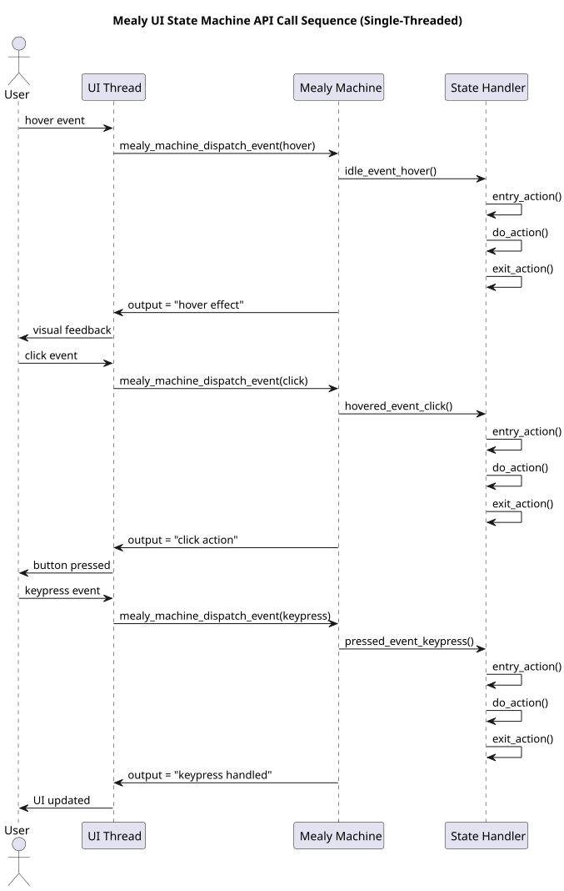
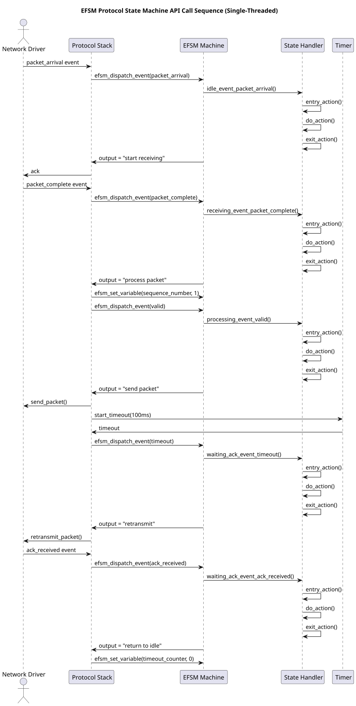
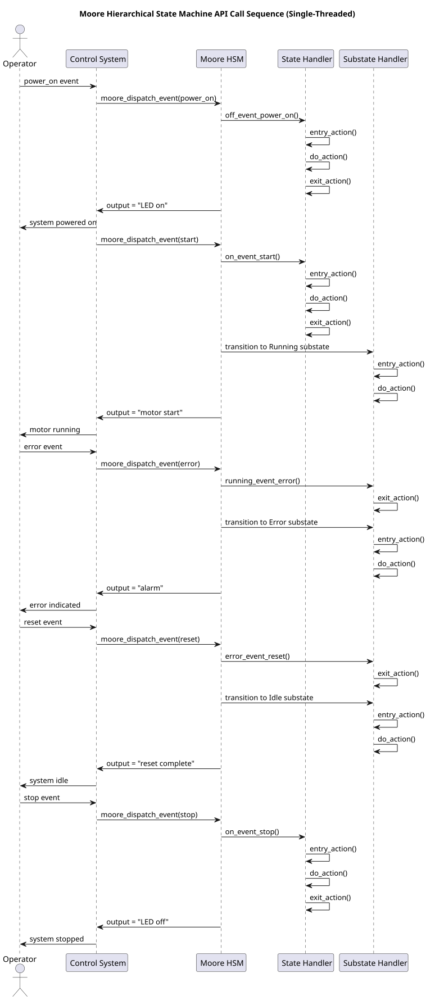
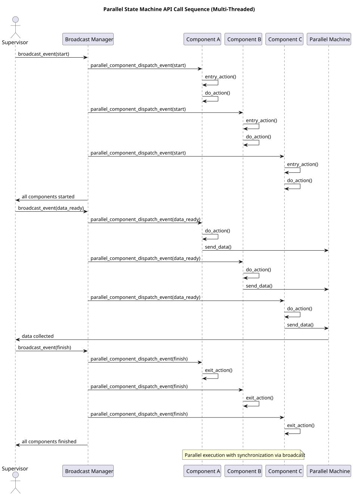
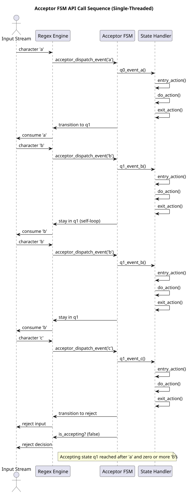

Five specialized state machine implementations with bidirectional mapping between design diagrams and C code, supporting entry/do/exit actions and priority‑based configuration.
Scenario: UI Interface Control
Type: Mealy event‑driven
Key Features: Output depends on event and state, entry/do/exit actions per state, visual feedback mapping.

API call sequence diagram
Scenario: Communication Protocol
Type: EFSM + Three‑Stage
Key Features: Extended variables (sequence_number, timeout_counter), guarded transitions, three‑stage processing.

API call sequence diagram
Scenario: Embedded Control
Type: Moore + Hierarchical
Key Features: Output depends only on state, hierarchical nesting, entry/do/exit actions per state, temperature‑based transitions.

API call sequence diagram
Scenario: Concurrent System
Type: Parallel FSM
Key Features: Multiple independent FSMs, broadcast synchronization, entry/do/exit actions per component.

API call sequence diagram
Scenario: Regular Expression Matching
Type: Acceptor (Receiver) FSM
Key Features: Accepts/rejects input strings, character‑based transitions, entry/do/exit actions per state.

API call sequence diagram
The following table provides a priority‑based mapping between scenarios, state machine types, and implementation details. Use it to select the appropriate FSM for your project.
| Scenario | Recommended FSM Type | FSM Subtype | Key Features | API Functions | Mapping Level (1‑5) | Code File |
|---|---|---|---|---|---|---|
| UI Interface Control | Mealy | Event‑Driven | Output depends on event and state | mealy_machine_dispatch_event() | 5 (High) | mealy_ui.c |
| Communication Protocol | EFSM | Three‑Stage | Extended variables, three‑stage processing | efsm_protocol_process() | 4 (Medium‑High) | efsm_protocol.c |
| Embedded Control | Moore | Hierarchical | Output depends only on state, hierarchical nesting | moore_hsm_dispatch_event() | 5 (High) | moore_hierarchical.c |
| Concurrent System | Parallel | Parallel FSMs | Multiple independent FSMs, broadcast synchronization | parallel_machine_broadcast_event() | 3 (Medium) | parallel_fsm.c |
| Regular Matching | Acceptor | Receiver FSM | Accepts/rejects input strings, character‑based transitions | acceptor_machine_feed() | 2 (Low‑Medium) | acceptor_regex.c |
All five state machine types are accompanied by:
These artifacts ensure that design decisions are traceable from requirements to implementation and back.